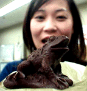
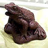
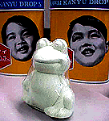

|
カエラーにはカエル義理チョコ！ 【福岡発=すみ様】今年のバレンタインデーは、カエル好きな人に、カエル義理チョコあげました。でも、カエラーの人って、カエルチョコもらっても食べれないとおもうので、いったいどうしているんでしょうか？？ずっと飾っておくのでしょうかねー、謎。
 一生涯飾ろうカエルチョコ！【全国かえる奉賛会】実は、それが悩みなのである。うわああああああーカエルチョコだあああああああ。ほんとうにありがとう！！毎年大喜びする、われわれカエラーではあるが、その後、しばらく喜んだのはいいが、チョコをたべるべきかどうかで、非常に悩むのです。チョコなので食べるのが筋とは思うけど、これがなかなか食べれるしろこものではない。なんか可哀想ではないか。チョコに生まれたカエルとはいえ、そいつをがぶっと食べると自分がヘビになった気分がするし、べろべろなめようものなら、カエルが溶けてしまって、超リアルな状態になってしまっていけない。
ということで、食べずに展示品としておくと、もとは食品なので、置物のようにそうは何年も飾り続けることはできないのであるー。いったい、カエラーのみんなは、どうしているんでしょ。
 はかなげソープカエル発見！【福岡発=とみか様】なんだかはかなげな存在の、カエルの石鹸を発見しました。小さな石鹸で、ビニールの被膜を破って使うそうです。でも、色とかが淡い緑色のせいか、なんだかとってもはかなげな表情なんです。 使うと、消えてなくなってしまうので、可哀想で使えない。肝油の缶の前で記念撮影して、大王にプレゼントしました。
【全国かえる奉賛会】ありがとうございます。汚濁した現世にひっそりと誕生した、カエル石鹸。大王は決して、きみをつかわないからねー。
カエル着ぐるみ、かえるぬいぐるみ情報提供を！【かえる掲示板発=ケグリ同志記者】アイフルのＣＭに、遊園地でカエルの着ぐるみを着た「２１歳，イベント会社勤務」という女の子が出てきますね。しかもこの着ぐるみは、矢島さらさんの「けろけろ」に出てくる「けろけろ純情派」の「妻」のほうの着ぐるみと同一ですね。一瞬，矢島さらさんその人かと思ったら、ＣＭの後半で顔を出しているのを見たら別人のようでしたが。この着ぐるみを着て働いている姿を実際に見ることができるのでしょうか。ぜひその遊園地を教えてもらいたいものです。
【かえる掲示板発=べれー様】二年前に、濃い緑色のベレー帽をかぶって、二つボタンの服を着た様な（？）眉毛のある10センチ位のカエルのフェルトのぬいぐるみを買いました。とっても気に入っているのですが、最近汚れて困ってます。。
【全国かえる奉賛会】かえる掲示板への投稿だあ。誰か知っている人は情報を待つ。メールまたは、掲示板に回答してくださいー。
かえる新聞きゅーあんどえー！【問い】かえる新聞の記事のところに、投稿した人が「同志記者」「様」の２種類あるのはなぜですか。
【答え】ふふふふ。。よく気が付いたのう。投稿した本人が自他ともに認めるカエラーの場合とか、カエルなHP持っていたら、どーみてもカエルがすきなんだよなー。などと判断した場合は、もー本人がどうあろうと、「同志記者」なのであるー。カエル同志というわけです。
投稿採用者に武功カエル徽章を授与！ |
かえる古新聞過去に取り上げた記事を見出し付きで一覧したい人は、ここをクリック◆創刊号を見る◆先週号を見る◆話題の号を見る◆かえる新聞の昔を読む◆COOL NET FROG RANKING !
|
私も入っています。。全国かえる奉賛会
大王様に会うには、このバナーをクリック。ずっと奥に写真館があるぞ。全国かえる奉賛会に入会するには、自分のホームページのどこかに、下の部分を追加するとバナーがリンク付きで表示されるぞ。どんどん入会しましょー |


|